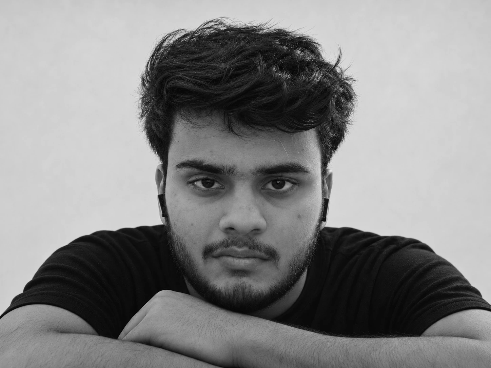

Bio
Theme
Tiwari Bengaluru, India · PES University

What I build
I’m a B.Tech student at PES University in Bengaluru. I like working across the interface and the systems behind it, from planning tools people can use every day to software that trains a 3D scene on a laptop GPU.
With Scene Rebuilder, I started by trying to turn single objects into textured meshes. I added local AI for object detection and eventually used Gaussian splats to capture a whole scene. I keep the input photos and 3D outputs together in the reconstruction gallery.
- Web development
- TypeScript, FastAPI, PostgreSQL
- 3D reconstruction
- Python, COLMAP, Blender, Gaussian splatting
- Network systems
- Mininet, Ryu, OpenFlow